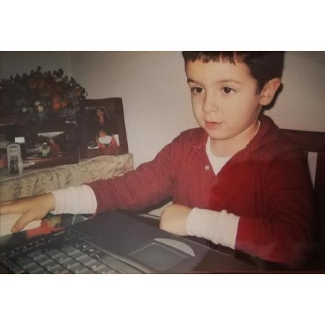

Date of Birth
03/05/2001 (age)
Nationality
Spanish
Email address
danibtcontacto@gmail.com
Address
Madrid, Spain
Curriculum Vitae Browse Projects Contact Info
Hello, world! Welcome to my personal webpage.
I'm Daniel, an upcoming computer engineer, currently studying at the Polythecnic Superior School
(EPS-UAM, Madrid).
Of course, I do many other things apart from studying. But above all, I consider myself
an avid reader and a learning enthusiast. I'm interested in devising a better
problem‑solving method for challenging tasks, and learning new technologies and tools
if the need arises.
You can find me on many social media sites, but professionally I'm the most active on Github.
Expertise
- C / C++ / Python / Java
- SQL, Docker, MongoDB, Django
- Debian-based Linux systems
- SCRUM, Traditional Methodologies
- Proficient fluency in English